|
CriticsCorner
|
Why Indeed Did the WTC Buildings Disintegrate?
A peer-review of Steven E. Jones' 9/11 Research
by Morgan Reynolds1 and Judy Wood2
1Ph.D. in economics, University of Wisconsin, Madison, 1971
|
|
2Ph.D. in Materials Engineering Science, from the Department of
|
| 23 August 2006, version 1.0 18 September 2006, version 1.01 (formatting, title change, video links, additions to figures 4f, 6, 12, 14c, 25b) 11 October 2006, version 1.02 (addition of figure 13a,b,c,d,e) 21 December 2006, version 1.03 (edited "cold fusion" in introduction) |
(This article has been "peer-reviewed.")
|
Nothing doth more hurt in a state than That cunning men pass for wise. -- Francis Bacon |
|
TABLE OF CONTENTS
I. Introduction II. Overview III. WTC Demolition IV. Thermite and Glowing Liquid Aluminum VI. The Pentagon VII. No Big Boeing Theory (NBB) VIII. Shanksville, Pennsylvania IX. The Scientific Method and Verified Evidence XI. Conclusion |
Abstract-Foreword
Disturbed about the content and quality of physicist Steven E. Jones' 9/11 work, Drs. Morgan Reynolds and Judy Wood conducted a peer-review. This review covers ten major issues which include demolition of WTC 7, demolitions of WTC 1&2, evidence for high-energy explosives, thermite, glowing aluminum, No Big Boeing Theory (NBB) and other issues. In the "truth movement," it is vital that we police our own. If we don't, the defenders of the OGCT certainlly will. You can be sure that it will get mighty ugly when defenders of the OGCT find major errors. This is the purpose for having research peer reviewed.
Four years after the event, a Brigham Young University physics professor, Steven E. Jones, suggested that the destruction of the World Trade Center skyscrapers was not caused by impact damage and associated fires but by pre-positioned explosives. Jones’ paper caused a stir because of his credentials and apparent expertise in physics, mechanics and chemistry. Jones is the only full professor in physics at a major university who has publicly expressed skepticism about the official 9/11 story. Jones’ background includes research in the controversial area of "cold fusion," but his work in muon-catalyzed fusion did not seem to produce any significant energy and hence proved a dead end, in contrast to the promising electrochemically-induced process.
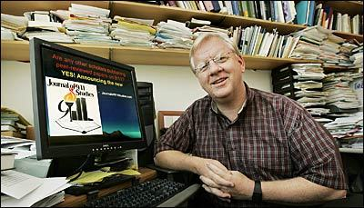 |
| Figure 1: Professor Steven E. Jones in his office. |
Within weeks of Jones’ arrival on the 9/11 scene Dr. Jim Fetzer, a philosophy professor at the University of Minnesota-Duluth, founded a new organization? Scholars for 9/11 Truth?and invited Jones to become co-chair, effectively second in "command." The society grew rapidly to 300 members and Fetzer and Jones made notable strides in publicizing shortcomings in the official 9/11 story. Steven Jones’ star continues to rise: "Now he [Steven E. Jones] is the best hope of a movement that seeks to convince the rest of America that elements of the government are guilty of mass murder on their own soil," writes John Gravois in the Chronicle of Higher Education, June 23, 2006. Canadian chemist Frank R. Greening says members of the 9/11 conspiracy community "practically worship the ground (Jones) walks on because he’s seen as a scientist who is preaching to their side."
Among other activities, Jones initially was responsible for the scholars’ discussion forum and he and Judy Wood instituted a "peer-reviewed" Journal of 9/11 Studies. Jones appointed the advisory editorial board, later Kevin Ryan as co-editor and chose the "peers" to review manuscripts. Peer-review normally boosts the prestige of academic articles because professors within the same discipline review manuscripts but in this case there is little or no such review, even when offered. That fact convinced Wood to resign.
The steep ascendant of one scientist puts many of the 9/11truth movement’s eggs in one basket. The question is, are we being set up for a fall? The time for applauding Jones’ stepping forward has passed. Events force us to take a hard look at Jones’ growing influence on 9/11 research.
Collectively we are engaged in a struggle to expose the government’s lies about 9/11. The physical sciences and analysis are key to this project. The only investigation worthy of the name has been conducted on the internet by researchers like Thierry Meyssan, Gerard Holmgren, Jeff King, Rosalee Grable, Kee Dewdney, Nico Haupt, Killtown, and "Spooked" who proved no Boeing 757 went into the Pentagon, flight 93 did not crash in the designated hole near Shanksville, PA, and the WTC towers were demolished by explosives.
Unfortunately, Jones fails to credit this body of research. More importantly,
- Jones’ work is deficient as shown below
- Its overall thrust is to rehabilitate portions of the Official Government Conspiracy Theory (OGCT).
- Demolition at the WTC was proven fact long before Jones came along, but he initially said that it is "…a hypothesis to be tested. That’s a big difference from a conclusion…" His subsequent concentration on issues like steel-cutting thermite and experiments with newly-discovered materials from unofficial sources allegedly from the WTC site have undermined confidence in demolition.
- That no Boeing 757 went into the Pentagon was proven years ago but Jones suggests it is unproven because the Scholars are split on it, though truth is hardly a matter to be democratically decided.
- Jones ignores the enormous energy releases at the twin towers apparently because his favorite theory, thermite and its variants, cannot account for data like nearly complete transformation of concrete into fine dust. Instead, in a blinkered fashion Jones narrows the issue to thermite versus mini-nuke (fission bomb) and predictably finds no evidence for a mini-nuke.
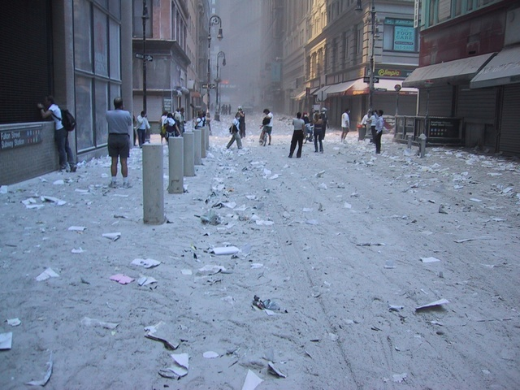 |
| Figure 2: Mostly unburned paper mixes with the top half of the Twin Towers. As seen a block away, a large portion of the towers remains suspended in air. |
- Jones neglects laws of physics and physical evidence regarding impossible WTC big plane crashes in favor of curt dismissal of the no-big-boeing-theory (NBB). He relies on "soft" evidence like videos, eyewitnesses, planted evidence and unverified black boxes. When others challenge how aluminum wide-body Boeings can fly through steel-concrete walls, floors and core without losing a part, Jones does not turn to physics for refutation but continues to cite eyewitnesses and videos, thereby backing the OGCT.
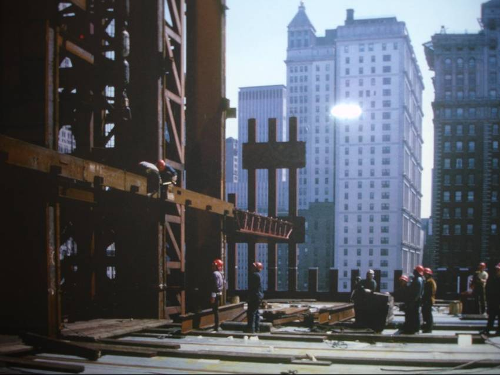 |
| Figure 3(a): Husky, beefy beams. |
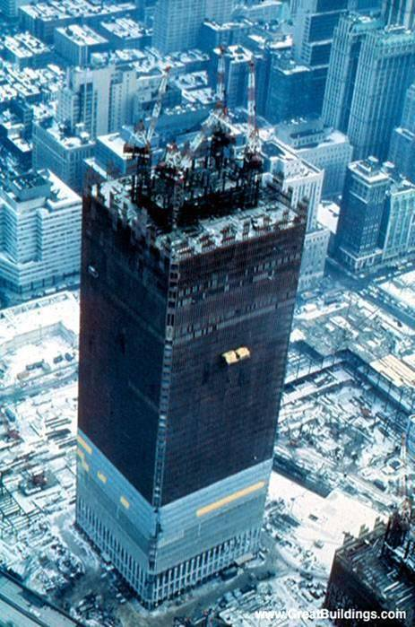 |
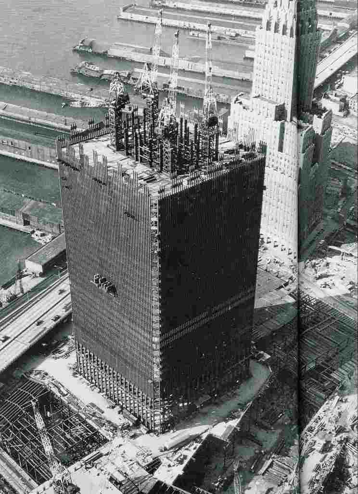 |
| Figure 3(b): Loss of a chunk (sizable section) out of this tower would be inconsequential. | Figure 3(c): If the tower is viewed as a "towering tree" and the Keebler Elves carved out a residence, no measurable weakening would occur. If their cookie oven set fire to the tree, it would be inconsequential. |
On 9/11 issues where the case is proven and settled, Jones confounds it. On controversies with arguments and evidence on both sides like NBB, he conducts no physical analysis and sides with OGCT. The world asks, what energy source could have transformed 200,000 tons of steel-reinforced concrete into ultra-fine particles within seconds, suspended in the upper atmosphere for days while leaving paper unharmed, hurling straight sticks of steel hundreds of feet, incinerating cars and trucks for blocks, and leaving nary a desk, computer, file cabinet, bookcase or couch on the ground? Jones seems to reply, "Superthermite."
|
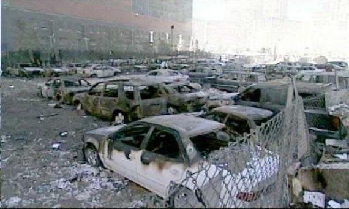 |
||||||||||||
| Figure 4(a): Unexplained spontaneous combustion toasted cars in a lot near the WTC. | ||||||||||||
|
||||||||||||
|
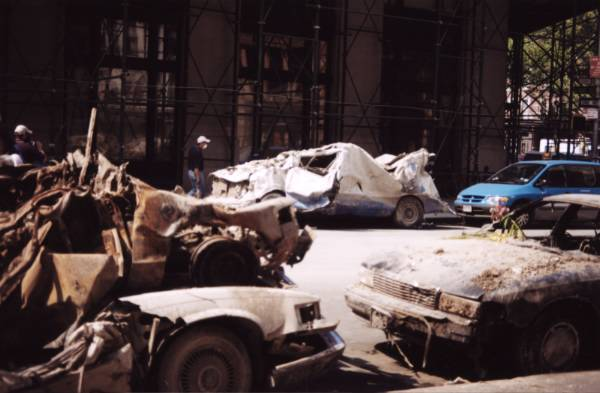 |
||||||||||||
| Figure 4(f): What was this object across the street? What caused that line of burn marks on the hood of the car in the foreground? |


The demolitions of WTC 1, 2 and 7 were different yet Jones treats them implicitly as if they are alike. The perpetrators essentially destroyed WTC 7 from the bottom up in a gravity-assisted collapse, while WTC 1 and 2 were primarily top-down, virtually unassisted by gravity and destroyed by a combination of conventional and unconventional devices. Jones points to conventional demolitions which leave clean-up crews with only short piles of rubble and remarks, "As observed for WTC 7, also WTC 1 and 2?the Twin Towers?on 9-11-01" [pdf (7/19/06) p. 16].", as if all demolitions are alike and have short stacks. The perpetrators could not order an off-the-rack demolition from aisle 7B to cleanly take down one-quarter-mile tall towers each containing approximately 100 acres of interior space.
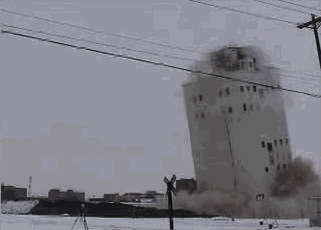 |
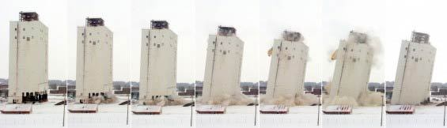 |
|
Figure 5(b): Demolition gone bad: the leaning tower of South Dakota fails to collapse any further. (mov) (wmv)
source-mov, source-wmv |
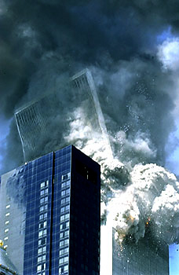 |
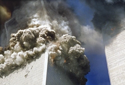 |
| Figure 5(c): Demolition starts bad: the top 300 feet of WTC 2 tilted as much as 23° before being blown to kingdom come. | Figure 5(d): No one had ever attempted to demolish a building nearly the size of a twin tower, and smoke from WTC 1 helped to distract and cover up problems in destroying WTC 2. |
 |
| Figure 5(e): WTC 1 smoke obscures WTC 2 demolition. |
The scrap guys could not believe the twin towers had so little rubble. "It simply did not seem possible that two of the world’s tallest buildings had all but disappeared…In total, 2,700 vertical feet of building, containing nearly 10 million square feet of floor space, were reduced to a tangled, smoking, burning heap less than 200 feet thick."
 |
| Figure 6(a): Ground zero rubble was surprisingly small. |
|
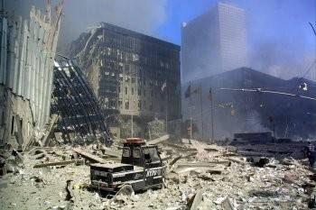 |
| Figure 6(b): The rubble was not deep enough to reach the undercarriage of the black Cushman scooter in the foreground and the flag poles in the background look full height. |
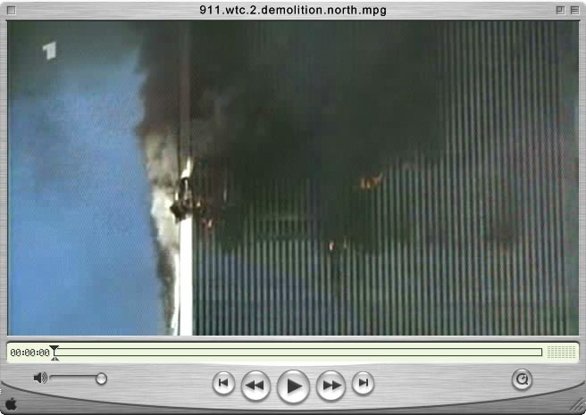 |
| Figure 6(d) Video of WTC2's demise |
 |
| Figure 6(e): Ground zero looks bombed out because it was. Little of the buildings remain and many husky, beefy beams (Figure 3 above) are gone. There was surprisingly little collateral damage to nearby buildings. |
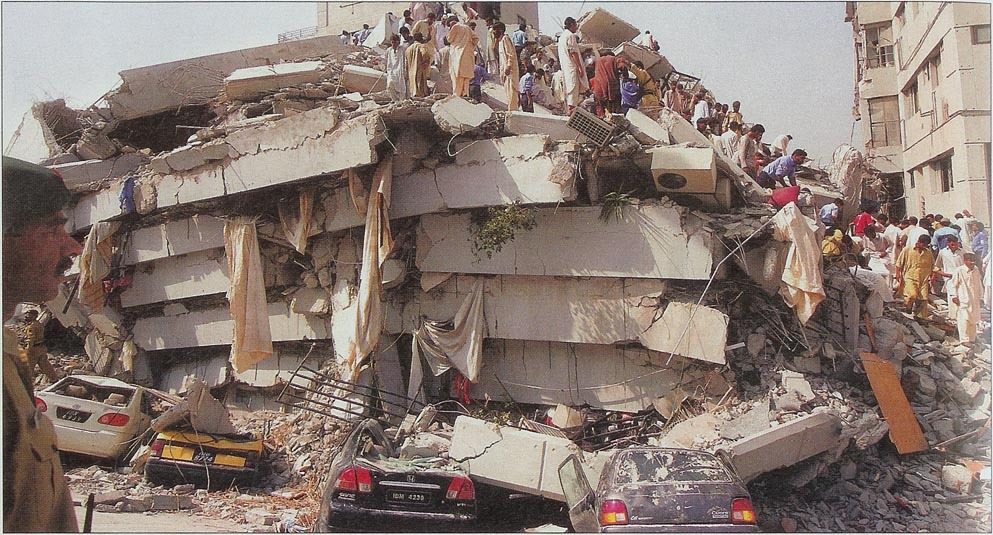 |
| Figure 6(f): An earthquake-induced collapse in Pakistan suggests how much rubble and how little dust should have been at Ground Zero if the government’s gravitational collapse story were true. |
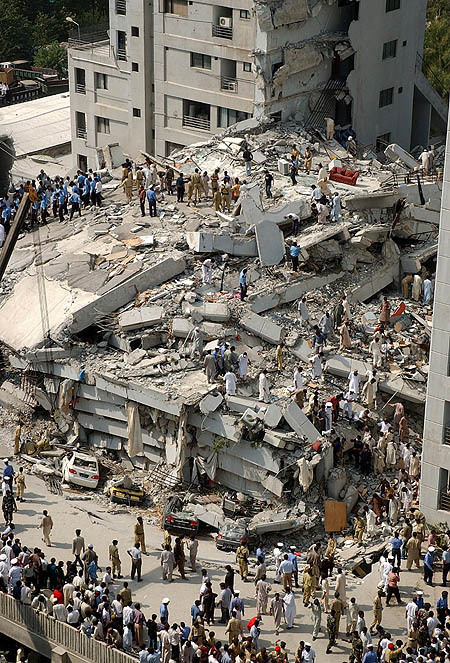 |
| Figure 6(g): Another view of the same earthquake-induced collapse in Pakistan. Note there is no dust in the air, validated by the clarity of the shadows. |
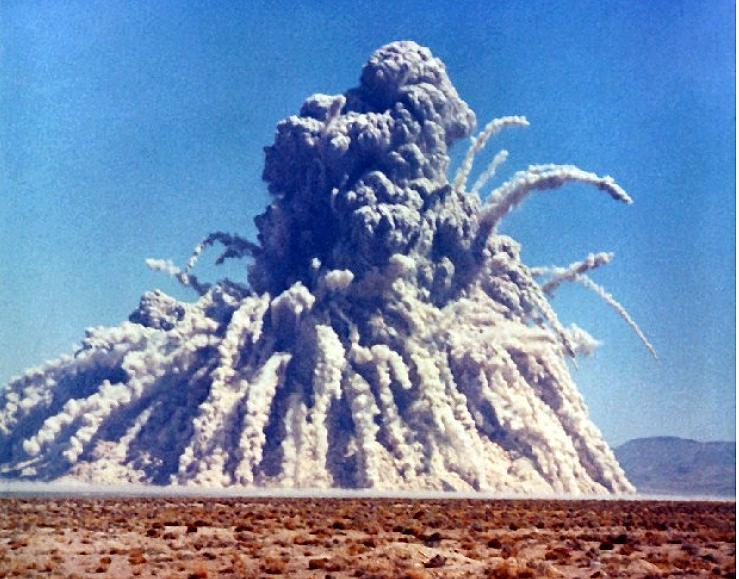 |
||||
| Figure 7(a): Nuclear blast in Nevada. | ||||
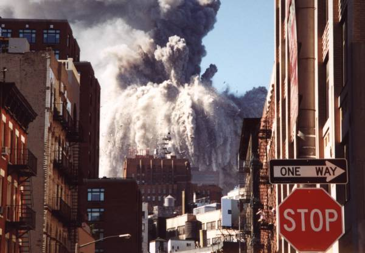 |
||||
| Figure 7(b): The cauliflower top looks familiar. Listen to the Ace Baker's documentary song, "Blown to Kingdom Come." |
||||
|
||||
"[A good option] is to detonate the columns so that the building’s sides fall inward," Jones writes, "…all of the rubble collects at the center of the building"[pdf (7/19/06) p. 19].". Jones seems untroubled by the meager rubble from the massive cores. If all the steel had fallen to ground zero, it would have formed a steel block at each tower base approximately 200’x200’x10.2’ high. If all the concrete had fallen to ground zero, it would have formed a block at each tower base 200’x200’x56.1’ high. Together they would total 66.3 feet tall of pure steel and concrete or over five stories with no air or other debris. This calculation takes no account of over 1,000,000 square feet of aluminum cladding, 600,000 square feet of thick window glass, machinery (including 200 elevators in each tower), wall board, ceiling material, water and water systems, a few million miles of wiring, office equipment and furniture, etc.
Jones poses a revealing question-and-answer:
Q: "What data finally convinced you that 9/11 was not just by 19 hijackers?
A: Molten metal, yellow-hot and in large quantities…" [pdf (7/19/06) p. 45]
This statement raises two problems: first, Jones gives credence to the loony OGCT that "19 young Arabs acting at the behest of Islamist extremists headquartered in distant Afghanistan" were involved or caused 9/11. It makes no sense to embrace parts of the government’s unproven story without independent proof. If a scientist falsifies his data, his career is over. Why not the same standard for government liars? Second, with so many compelling facts like near free-fall speed, symmetric disintegration in their own footprints, almost no concrete left, and many others, it is folly to rely on molten metal as the strongest evidence for demolition, especially flowing from windows in manipulated videos. In downgrading the importance of free-fall speed Jones wrote on July 2, 2006,"…there are stronger arguments at this time than those which rely on the time-of-fall of the Towers. We're still working on those calculations…stronger arguments are growing, IMO." There is no stronger argument for demolition than near-free-fall speed.
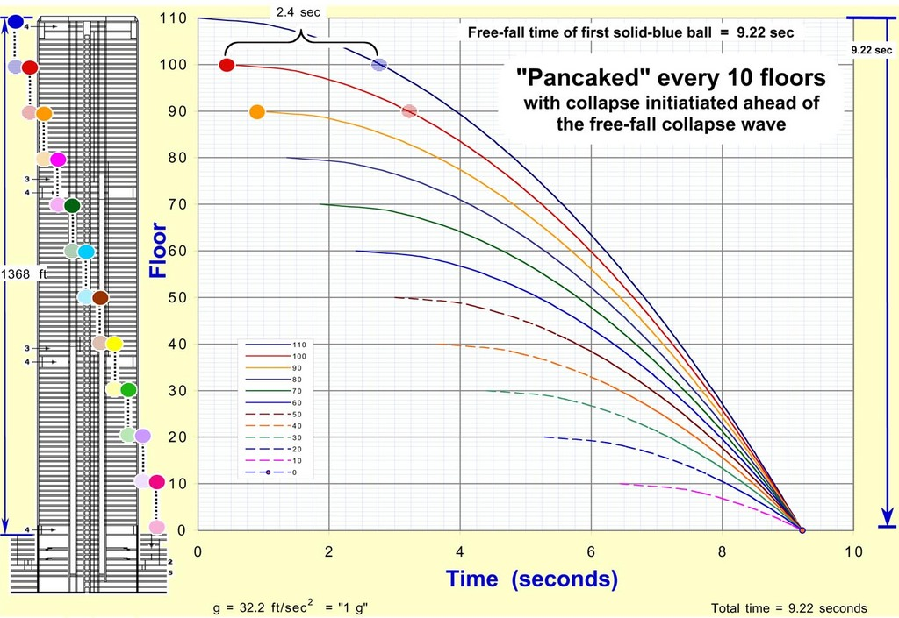 |
| Figure 8: This figure forms part of the proof that 110 floors can only hit the ground within 10 seconds if lower floors fall before upper floors reach them. For more, see the billiard ball example. |
 |
| Figure 9: The tower is being pealed downward. Dark explosions shoot up, while white ones explode outward. Above the white explosions the building has vanished while the lower part awaits termination. |
Jones states he was unconvinced about 9/11 demolitions until he learned about yellow-hot molten metal Jones [pdf (7/19/06) p. 45] yet last fall emphasized speed, symmetry and sequence of puffs or squibs at WTC 7 as evidence for demolition. It was not until mid-February 2006 that he discussed yellow-hot metal pouring out of a WTC 2 window. Our fear is that concentration on molten metal is a distraction and a path to a destination most people do not want to go. There are many ways to cut steel and the exact method is not all that important. Thermite cannot pulverize an entire building and make molten metal burn for 100 days. Something far more powerful was used and Jones avoids the question.
Over a year before Jones appeared, Derrick Grimmer, a Ph.D. physicist from Washington University-St. Louis and member of the Scientific Panel Investigating Nine Eleven (SPINE), posted a scientific article about possible use of thermite to melt sections of the WTC core. Jones does not cite this work but begins with the WTC study by the government’s National Institute of Standards and Technology (NIST) and its videos and pictures of liquid metal pouring from a window of the WTC 2. Jones does not challenge these data though they appear to violate the laws of physics. Where would heat sufficient to melt "huge" quantities of metal come from, allow it to collect in large reservoirs and pour along unspecified (irrigation) channel(s)? And how could thermite, which is little more than a cutting torch, melt mass quantities of metal [see Figure 14(b) and (c)]. After a confrontation, Jones admitted that Andrew Johnson spliced the videotape but they fail to tell us what was spliced to what and why and what the effect is. NIST claims the pictures and videos were from Reuters and WABC-TV but are they real? They look fake. Who took the pictures? What was the chain of custody? Is there evidence of photoshopping?
NIST acknowledges it "adjusted" the intensity of the photos somehow, so they were already doctored. Perhaps it was real phenomena but we strongly doubt it because
- No heat source is specified
- The liquid inexplicably appears to flow from a window rather than the floor and there is no explanation for what surface would support the flow
- The flow changes windows
- The aluminum cladding on the exterior displays no signs of heat or melting despite the fact that iron begins to melt at 1538° C and aluminum alloys begin to melt at temperatures under 660° C
- The flow disappears prior to destruction of WTC 2 as the video jumps.
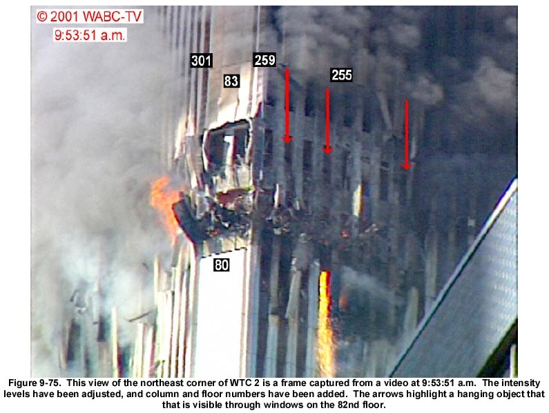 |
| Figure 10(a):NIST reports: "The intensity levels have been adjusted…" NIST does not say if the adjustment was uniform, confined to a particular window or what. The images have been tampered with and therefore are useless as data to scientists. |
{kind=link}
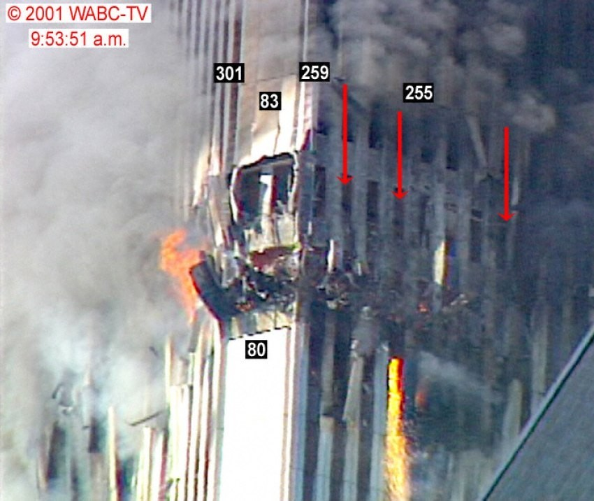 |
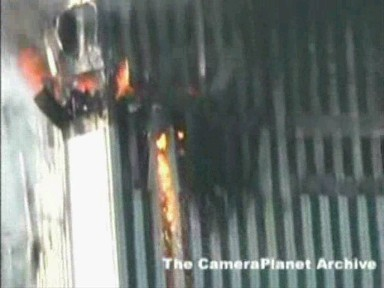 |
| Figure 10(b): Jones’ edited version of the photo ignores the NIST alert that "the intensity levels have been adjusted." He has also used spliced videotapes without identifying they were tampered with. | Figure 10(c): The alleged flow appears in a different window. |
{kind=link}
{kind=link}
We cannot explain how molten metal would pour from a window ledge and then move and pour from another window ledge, although NIST claims the flow performed such a feat within seven minutes of collapse. We need answers to these questions before we become convinced that the event was real and therefore deserves analysis.
Jones claims that the pictured flow cannot be aluminum because, "Molten aluminum in daylight conditions (like 9-11 WTC) is silvery-straw-gray at all temperatures" [pdf (7/19/06) p. 50]. Laboratory demonstrations in late February 2006 by Wood and Zebuhr (1980-2006) cast serious doubt on Jones’ contention. Jones’ table on[pdf (7/19/06) p. 63]." even documents the various colors of aluminum as temperatures increase. All metals, including aluminum, glow as temperatures rise. The exact appearance depends on the mix of impurities like oil and oxidation in the metal yet Jones argues,
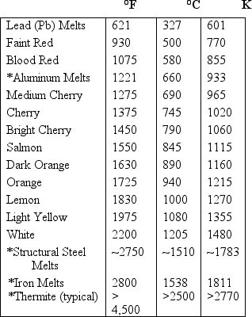 |
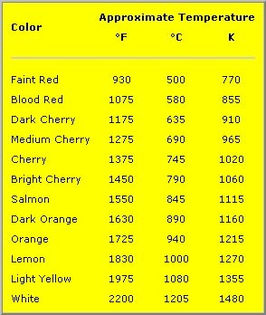 |
| Figure 11(a): Jones' Temperature Chart [Source1] [Source2] |
Figure 11(b): Temperature Chart [Source] |
At 600°C Al has a minimal glow as all metals do. An electric stove burner, for example, barely glows at that temperature and you may have to turn off the lights to see it.
Professor Jones uses the copyright photo below to support his claim that Al has no glow under daylight conditions. Yet this picture is not proof because there is no confirmation of what is being poured and at what temperature. Aluminum begins to melt at 660°C and has low emissivity, as iron does, and this picture just shows something being poured. The bucket or mold may be iron or steel, but they not glowing. If they are cold, the lack of visible reaction in the form of steam or sizzle must be explained.
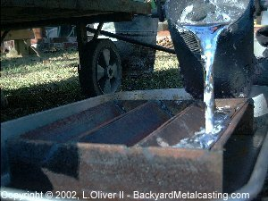 |
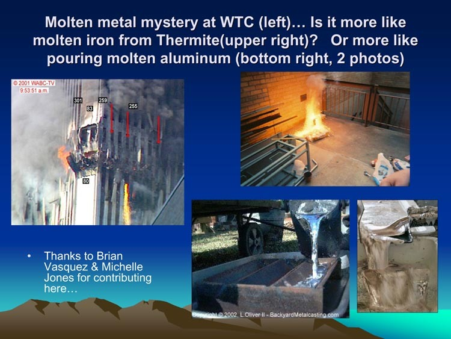 |
| Figure 12(a): Jones uses this picture. [source] | Figure 12(b): Apples and oranges compared, as text below explains. [pdf (8/15/06) p. 69] |
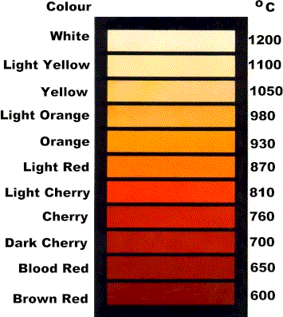 |
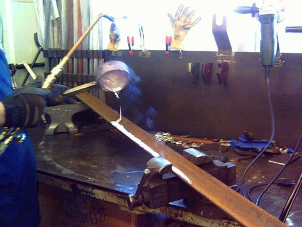 |
| Figure 12(c): This picture appears to have been taken indoors, in a dark room. If that is "daylight" outside the window, it clearly is not shining in through the window as there are no shadows. In addition, the pot in this picture is more out of focus than anything else in the picture, which would imply a slow shutter speed. It appears that the technician is shaking the pot in an effort to get the aluminum out of it. Fast shutter speeds are used in bright daylight. If the motion of the pot is captured on camera, can this really be considered to be "in daylight conditions?" | |
If the anomaly observed in the pictures of the south tower is even a real phenomenon and if it is iron, Jones’ favored interpretation, it must be above 1538°C. To rule out molten aluminum in these south tower pictures,aluminum would have to be heated above 1538°C for a valid comparison. Here is an analogy: who would conclude that a liquid at 25°C (room temperature) cannot possibly be water because we all know H2O is a solid at -5°C? No one. Or, is Steven Jones going to rule out "water" as the liquid because "water" is a solid at -5°C?
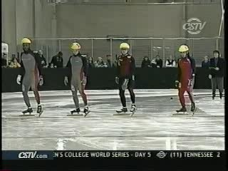 |
|
|
(a) Water at -10 to 0°C 2006 Olympic Trials |
(b) Some liquid at 25°C Source |
| Figure 13: (a) Speedskaters stand on solid water and (b) a glass of a clear liquid at 25°C (room temperature) | |
Compare apples to apples, oranges to oranges, one metal to another under the same conditions. In the case of an aluminum alloy, it only takes about 600°C to become liquid. We can see that the aluminum pictured at BYU is nowhere near 1538°C because it is solid, it is not flowing, the container and its handle do not glow and flimsy gloves offer plenty of protection. Notice the steam coming off the pot that we do not see in Figure 12(a).
|
Aluminum does not remain "silvery" at elevated temperatures.
Note that the emissivity of Aluminum increases with temperature. |
||

|
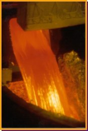 |
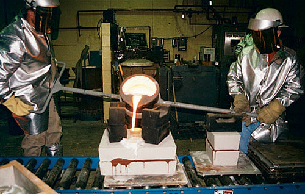 |
|
Figure 13(c): Aluminum alloy at 580-650°C Backyard Metalcasting.com |
Figure 13(d): Aluminum at ~1000°C International Aluminium Institute |
Figure 13(e): Aluminum at ca. 1500°C Popular Mechanics |
|
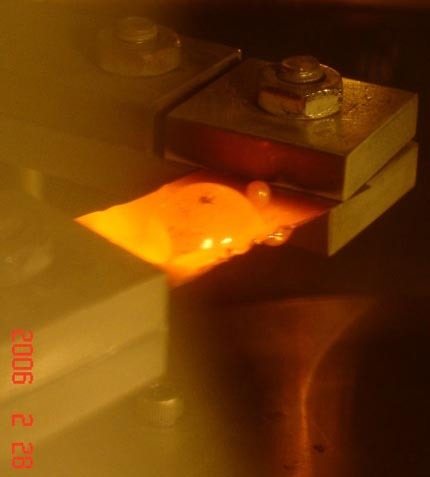 |
|||
| Figure 13(f): 99.7% pure aluminum at approximately 1,000° C (Wood/Zebuhr). | |||
|
|||
Thermite plays a major role in Jones’ work on the demolitions. He concludes that his thermite evidence points exclusively to its use in WTC demolitions based on the testimony of lawyer Robert Moore and 9/11 activist Michael Berger plus his own reasoning that "thermite ejects globs of molten white-hot iron" and is too dangerous to work with. Jones believes that clean up crews at WTC did not use thermite. Yet these pictures from Ground Zero suggest room for doubt. In the tangle of the WTC mess, thermite would be useful to cut steel under conditions of poor accessibility. Nor is thermite as dangerous as Jones suggests. Jones has even used a video of college kids playing with thermite. (wmv) (YouTube)
|
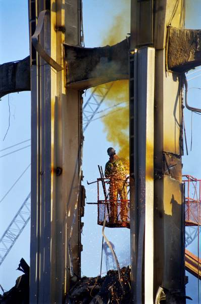 |

|
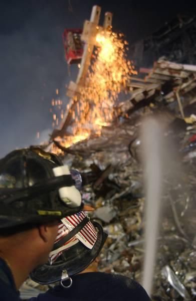 |
| Figure 14(a), (b), (c): Maybe thermite was used in the Ground Zero clean up. | ||
What about nanoaluminum for cutting steel? Jones calls it "superthermite" and jumps to the conclusion that it caused the molten metal pools burning 99 days without eliminating competing hypotheses. There is no proof that thermite could cause such long-lived, intense fires. Jones and others might conduct experiments to prove otherwise, but we doubt such a result can happen. "Such molten-metal pools never before seen…with controlled demolitions which did not use thermite, nor with building fires, nor with thermal lances," writes Jones, "Huge quantities of the stuff." Jones asserts "that much thermite was used to bring the buildings down" [pdf (7/19/06) p. 62]." but if proven wrong, there is little or no fallback position. Placing all eggs in a thermite carton may lead to slim breakfasts down the road.
Another issue is how the perpetrators could deploy and control the necessary thermite. With 236 perimeter columns and 47 core columns and 110 floors to cut loose in each tower, it might take 31,000 large thermite deposits/canisters igniting in a computerized sequence to bring each tower down. Even if thermite was placed on alternate floors, that would be 15,500 charges in each tower. Then there is the problem of sufficient radio frequencies with 220 floors, each with its own set of frequencies. Professor Jones might give these scenarios some thought.
Professor Jones reports that he has analyzed a piece of solidified metal slag from WTC. He provides no documentation of the source or evidence regarding the chain of custody. He concludes that the presence of manganese, sulfur and fluorine suggest a "thermite fingerprint" [pdf (7/19/06) p. 77].". Perhaps he is right but there is no independent corroboration. Can outsiders test the slag? Jones has proved nothing. Demolition is corroborated, proven and undoubtedly involved steel cutters to insure swift collapse of the lower structure, but the cutters were not necessarily thermite. Without proof, thermite advocates put themselves out on a limb.
Thermite is a non-starter to account for phenomena (see 911eyewitness) like these:
1. Disintegration of 99% of concrete into ultra-fine dust (50% of particles under 100 microns in samples from three locations, Dr. Thomas Cahill and his group measured concentrations of particles in ranges from 0.09 to 2.5 microns).
2. Superheated steels ablating?vaporizing continuously as they fall?as seen in video clips of the towers collapsing.This requires uniform temperatures roughly twice that of thermate (see Figure 17a below).
3. The North Tower spire stood for 20-30 seconds, evaporated, went down, and turned to steel dust.
 |
| Figure 15: Steel beams turn to steel dust. |
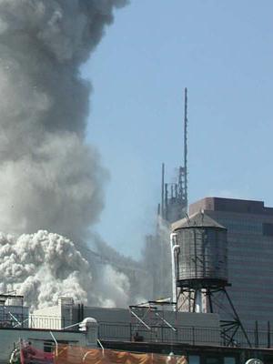 |
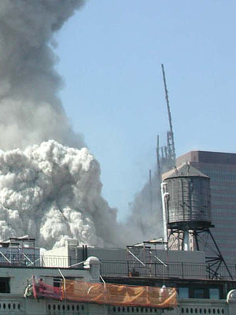 |
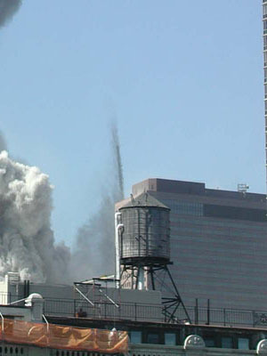 |
 |
 |
| Figure 16: The same steel-dust phenomenon from another source. | ||||
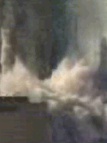 |
 |
| Figure17(a): A video clip of steel turning to steel dust. (gif) (mov) (avi) (gif) | Figure 17(b): Another video of steel turning to steel dust, although CNN’s Aaron Brown calls it smoke. [Click on image for video, or (mpg) (avi) ] |
-
4. 33-ton section of outer wall columns ripped off side of tower.
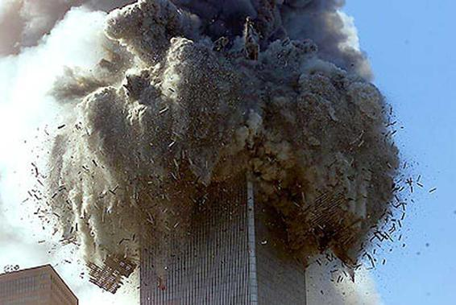 |
| Figure 18(a): Large sections of outer wall to the left and somewhat hidden to the right blow off the tower. |
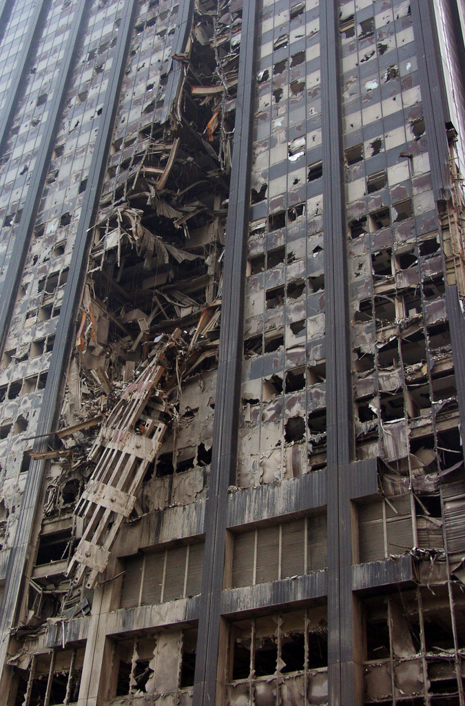 |
| Figure 18(b): What scooped out the middle portion of the building across the street from WTC2? |
-
5. Sharp spikes of Richter 2.1 and 2.3 in seismograph readings occurred at the start of both tower collapses. Short duration and high power indicate explosive event, as illustrated by the audio track recorded in Rick Seigel video, 911EYEWITNESS. The abrupt cessation of movement implies no collapse but sudden termination of shifting of debris.
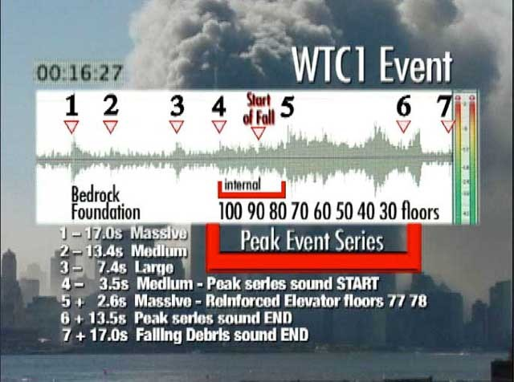 |
| Figure 19: Audio signal stops abruptly, indicating no expected tapering off from a "settling process" in the debris pile. Source: [911eyewitness] |
-
6. Electrical outage over a wide area with repairs taking over three months, suggesting EM pulses.
7. Fires took 100 days to extinguish despite continuous spraying of water and huge rainstorms.
8. Brown shades of color in the air suggest something odd occurred. Air had pH levels of 12 of a maximum 14. TV and documentary footage changed the color balance to blue to disguise this fact according to Rick Siegel, indicating complicity in the cover-up.
9. Elevated tritium levels measured in the WTC area, according to Siegel, but not elsewhere in New York.
10. Pyroclastic flow observed in concrete-based clouds must have resulted from explosives, not thermite. Huge expanding dust clouds multiples times the volume of the building, indicating extreme levels of heat in excess of traditional demolition explosives.
11. Some rescue workers and 14 rescue dogs died too soon afterward to be attributed to asbestos or dust toxins.
12. Decontamination procedures used at Ground Zero (hi-pressure water spraying) continuously for all steel removed from site. Constant scrubbing of the site made it look like it was clean enough to eat off of. Officials plainly did not want any outsider to find something.
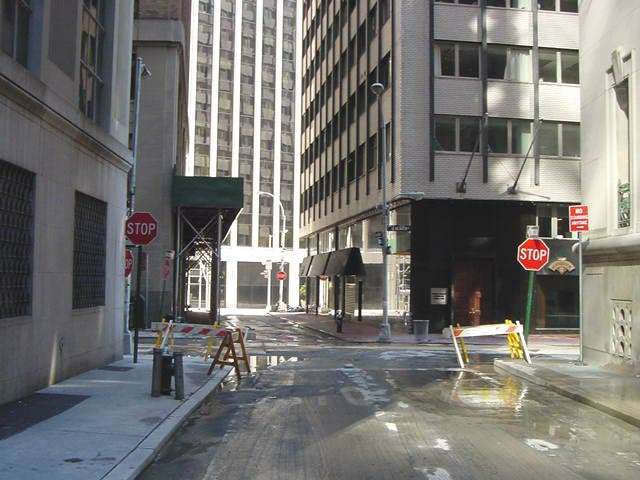 |
| Figure 20(a): Lower Manhattan was not the only recipient of a hose job. |
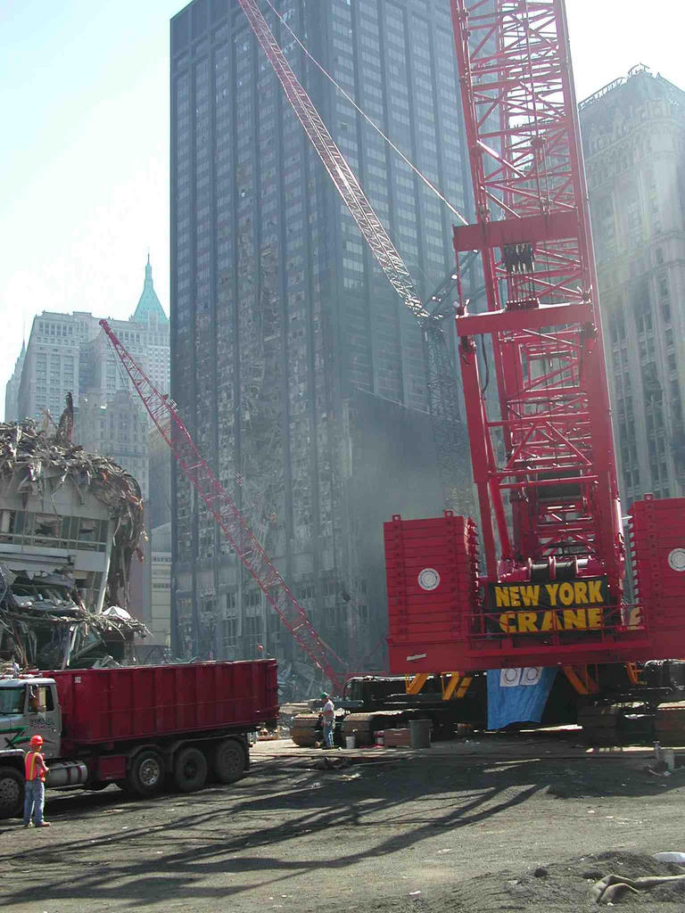 |
| Figure 20(b): All new cranes quickly on site (ordered in advance?) and lots of scrubbing. |
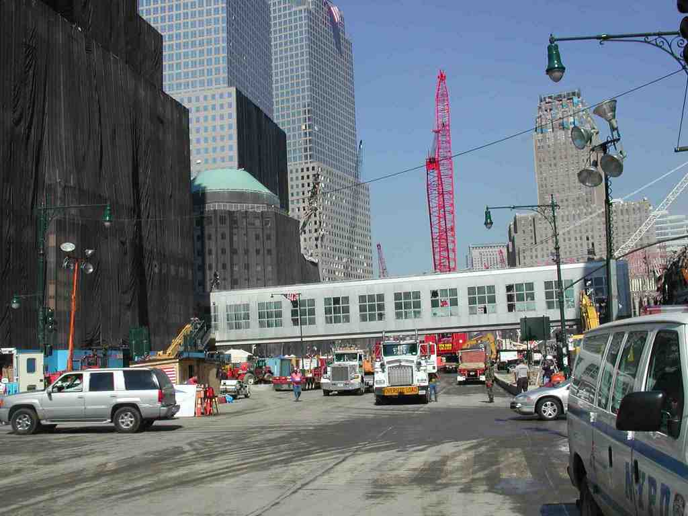 |
| Figure 20(c): New York City makes a clean sweep of it. |
-
13. No bodies, furniture or computers found in the rubble, but intact sheets of paper littered the dust-covered streets. Material with significant mass may have absorbed energy and were vaporized while paper did not.
14. 200,000 gallon sprinkler and water supply systems were in WTC1 and WTC2, but there was no water in the ruins.
15. Many cars and trucks exploded around the WTC and caused burned out wrecks that were not hit by debris. A group of police cars on the FDR Drive had parts roasted. EM pulses may have caused electrical components to explode and burn vehicles far from the WTC site (see Figure 4 above).
These data should excite scientific curiosity. Citing a photo of a mushroom cloud atop a tower [pdf (8/15/06) p. 18]. Jones calls it "evidence for use of explosives, like RDX, HMX, or Superthermite (nanoaluminum powder)." Massive mushrooms tops do not erupt from a building imploding from RDX. The towers were not imploded. They were exploded. They were blown to kingdom come. Normally, people look at "what" happened and then try to figure "why" or "how" it happened. There is no good reason to stick to the familiar or conventional in the belief that the perpetrators would not kill citizens with exotic devices. The stone-cold killers would use whatever was in the arsenal and would do the job best, including simplifying the cover story.
Jones asks a question related to high-energy-release phenomena: "Could mini-nukes have been used on the Towers?" He explains, "Hypothesis was raised by someone (not me) [so] we do experiments to find out! (Scientific method)" [pdf (8/15/06) p. 149]. We wonder what experiments Jones did with mini-nukes on the BYU campus. Experimental method aside, it is not scientific to bypass data and set off to disprove a circumscribed hypothesis proposed by somebody (a "bad" person?). Jones claims he tested a metal slag (origin unknown) for radioactivity (what kind? what instruments?) and found nothing above background levels. Residents of New York City reportedly detected abnormal radiation on hand-held Geiger counters at the WTC site, though we cannot vouch for the veracity of these reports. While we too doubt a fission bomb was used, Jones’ assertions play no role in our assessment.
Tritium would be a telltale sign that an extraordinary device was employed on the Twin Towers. Jones says he tested an air sample (origin and preservation technique unknown) and found only traces of tritium. Until independent researchers test verified samples, there is nothing here but Jones’ word and we leave it to you to decide its value. Jones takes a victory lap ("Mission Accomplished") by saying, "So the evidence is strongly against the ‘mini-nuke’ idea, which no longer be promoted [sic] unless and until the above compelling evidences [sic] can be successfully overturned" [pdf (7/19/06) p. 150]."
A promising hypothesis derives from the super fine particles found by Dr. Cahill, so small that they would normally occur only if metals were heated to the boiling point, e.g., approximately 2,750° C for steel, that is, steel vaporized and re-condensed as particles. Since such temperatures were not reached, the process would be something that could extract or neutralize the bond energy of metal atoms. Call it an "alien ray gun." It may be a scalar interferometer: tune two electromagnetic scalar waves so their interference zone extracts energy at a wavelength corresponding to the bonding forces in the metal and it begins to fall apart. This hypothesis necessarily involves secret technology, so it is not a proven but possible explanation for the data. We encourage Professor Jones to investigate.
Jones did no research that we know of on the Pentagon incident. Most 9/11 skeptics believe no Boeing 757 crashed into the Pentagon because the gash was too small, no plane marks left on the building (airliner silhouettes of passage at the Twin Towers, not at the Pentagon even though concrete is brittle and more likely to shatter and show a plane’s imprint), no verified debris, no bodies, no blood, it is physically impossible to land a 757 at a speed of 500+ mph because of the downwash sheet, etc.
"The question of what hit the Pentagon on 9/11 has NOT reached a consensus among the Scholars group" [pdf (7/19/06) p. 157].", says Jones. The word NOT suggests that people should suspend judgment. Maybe a big Boeing magically shrunk itself and disappeared inside the Pentagon. Voting machines, surveys and Steven E. Jones’ subjective guesses aside, facts are not determined by polls. "Several of the Scholars group argue…perhaps a B737 rather than a B757 (AA flight 77)" [pdf (7/19/06) p. 159]." went into the Pentagon," Jones persists, offering zero scientific evidence for this hunch. If the hoax of a Boeing at the Pentagon is unproven, nothing about the 9/11 hoax has been proven. "We also seek answers as to why there were no air defenses to stop the incoming jet!" [pdf (7/19/06) p. 160].". With no proof of an incoming jet, Jones assumes OGCT. Jones and the scholars should hunt the Boeing.
At the heart of the 9/11 fiction, we were told that, using only boxcutters, Arabs hijacked four airliners and crashed them in designated locations? Jones sees no real problems with this story. He is hostile to the "no big boeing theory" (NBB), the theory that no Boeing 767 airliners went into either WTC tower, and no Boeing 757 airliners went into the Pentagon or the Shanksville covered strip mine. Advocates usually allow for missiles or other air vehicles flying about, including unmanned (UAV’s), or even smaller planes. Jones’ motivation is unclear, but he applies no physics to the events and fails to study the physical evidence associated with the alleged crashes. An objective scientist, for example, would review data like this silhouette of passage in WTC 1:
| Figure 22(a): Silhouette of passage by invincible Boeing 767? |
 |
|
| Figure 22(b): Silhouette of passage by Invincible RoadRunner. Hmmmmmm!? | Figure 22(c): Beep! Beep! |
No airplane debris was visible in the gash and no verified debris was knocked to the ground below the impact wall. Consider the conspicuous right wing tip mark. If the Roadrunner can fly through an Acme steel plate, a Boeing can too, right? The aluminum airliner nose crashed into the steel wall and five steel/concrete floors, remaining intact. The fuselage disappeared far inside the gash without deformation, no torsion (twisting) and forward wing momentum no greater than the fuselage, despite stout resistance from the tower. In truth, with no direct resistance from the building and powered by full throttle engines, wing momentum would tear the wings from each suddenly-decelerating fuselage. Wing spars are built of strong but brittle forged aluminum and must break off. But back to the government-media fairy tale: As each wing root and its jet fuel and heavy undercarriage crashed into walls and floors, no fuel spilled out and nothing burned across the face of the building, all fuel being carried inside. Since 767 wings are swept back about 35 degrees, each intact wing had to sever steel columns and spandrel belts sequentially over milliseconds, each aluminum forward edge effectively "sawing" through steel columns/belts and steel-reinforced concrete floors with nothing breaking off. Amazing! Despite no structural connection to the main spar, the right wing tip in question survived this assault and then tattooed the aluminum façade, demurely slipping inside each building. Gullible Americans and most American physicists, judging by their silence, join Steven E. Jones in embracing the WTC airplane fiction.
| Figure 23: A C-130, about half the weight of a Boeing 767, hit this 10-story apartment building at approximately the 8th floor in Tehran last December and crumpled outside, throwing debris around and spilling burning jet fuel over the impact wall and inside the building. |
| Figure 24: Three-pound bird goes mano a mano with aluminum plane and does heavy damage. [source] |
The incurious Jones passes up a treasure trove of data which defy logic and laws of physics:
- Holes in the towers too small to swallow wide-body 767s.
- No plane debris on the ground below the impact holes.
- No fuel burned below gashes of either tower (Figure 22).
- No plane debris visible in the gashes, hanging out, nor outside any exit side.
- Videos showing the same impossible physics, gliding smoothly at 500+ mph through the steel exterior and steel/concrete floors and stopping within a tenth of a second inside, suddenly destroying itself and vanishing with virtually all 3.1 million parts inside.
- Virtually no airplane debris at any of the four alleged crash sites ("the cleanest crash sites in aviation history" except for evidence planted by government agents) and no time-change parts with serial numbers unique for each aircraft ever identified or proven.
- As retired software engineer in the aerospace industry Joseph Keith says, "Every video that shows impact shows a plane flying through the tower wall the same way it flies through thin air: no cratering effect, no pushing parts of the building in, no crunching of the airframe as it hits resistance, no reaction from the heavy engines and hidden landing gear, no parts breaking off, no outer 30 feet of the wing breaking off, no bursting, shredding or bending of the wing," "No nothing." The videos are fake.
"Can anyone prove that al Qaeda acted ALONE?" writes Jones, "I have not seen any such proof" (p. 124). The Government never attempted to prove its OBL fiction because it could not. OGCT is the most audacious fraud of all in a history littered with frauds like Operation Northwoods, Gulf of Tonkin incident, Watergate, Iran-Contra, Kuwait baby incubator hoax, Niger yellow cake and Saddam Hussein’s WMD. Rather than research, Jones assumes premises not in evidence. He has the same amount of proof that al Qaeda conducted 9/11 as he has that
No one can prove a lie, not even Steven Jones, hence government cannot prove OGCT.
|
Saddam Hussein did it.
"Did a faction in the government know about the hijackers’ pending attacks beforehand?" [pdf (7/19/06) p. 124]." Jones asks. The professor is clueless or a disinformation agent. He refers to pre-9/11 intelligence warnings that are disinformation, thereby echoing the blood libel that 9/11 was done by Arab hijackers. Jones defends the 9/11 Commission’s conventional air defense "breakdown" story. It is nonsense to make such statements backing the OGCT without looking at or conducting scientific research on these issues.
When Jones defends the WTC airliner story, he cites soft evidence like videos, "many, many eyewitnesses," unverified flight data recorders, an alleged consensus of Scholars’ (capital "S") in favor of airliners and calls for release of evidence (who but the government could object?). Jones says videos "clearly show the commercial jet liner." Doh! You mean the perps would fake a video and NOT show a jet liner? The question is, do the pixels reflect reality or is the jet liner image inserted? In NFL broadcasts, the first-and-ten line is inserted in real time, as are billboards at NBA and MLB games, even customized by region. At the Winter Olympics, TV trickery inserted the flag of each speed skater’s nation under the ice and then switched it in real time as the skaters switched lanes. Truly remarkable.
Since he is no video expert, the clueless professor might ask himself if the Newtonian laws of motion still prevailed on 9/11. If so, then the videos are fake. But he answers, "many, many witnesses." Even if we granted many, many for the sake of argument, so what? One day in the past, many, many witnesses saw the earth was flat and five years ago many, many saw the psy-op on TV, including those who allegedly saw an airliner hit a tower from the street below or a skyscraper. Jones lays it on extra thick about eyewitnesses because once the videos are exposed for the fakery they are, that is what he and the government have left as proof.
To sketch in a refutation of eyewitness accounts, first, most people in the "canyons" of lower Manhattan could not see a plane if it smacked into a tower at 500+ mph, and many said so. A plane at 500 mph would cover a 60’-wide street and its sidewalks within a tenth of second. Second, many witnesses heard no jet and most of the video sound tracks record no jet liner booming at incredibly high speed and low altitude. South tower penetration is silent in videos. Third, witness testimony is notoriously unreliable and fungible.[archived version] Fourth, people lie (the perps hired actors, along with a script for complicit media). Fifth, physical evidence ranks number one with prosecutors and scientists while eyewitness testimony ranks lower, certainly no higher than second. A physics professor should exhibit more interest in physical evidence than hearsay inadmissible in court.
| Figure 25(a): Landing gear amid dust, adjacent to old scaffolding, not on a street corner, close to curb, just left of the mid-point of a dusty Greco-Roman pillar lying in the gutter. | Figure 25(b): Landing gear amid dust, adjacent to old scaffolding, not on a street corner, close to curb, just left of the mid-point of a dusty Greco-Roman pillar lying in the gutter. The crime-scene ribbon is oriented differently and the axel hanging over the curb more than in Fig. 25(a). [cut from this picture.] |
| Figure 25(c): Landing gear on a dust-free street corner near shiny new scaffolding, set back from the curb and no Greco-Roman pillar visible. The tire and brakes look different too. Note the failure surface of the shaft. It's sharp, not appearing to have bounced around on the pavement. It also appears to be a torsion failure. How can an explosion cause that? | Figure 25(d): Landing gear in new photo op: tire looks in better health, no extensive dust, new scaffolding, further from the corner, further forward toward the top of a dust-free Greco-Roman pillar. We suspect tampering with evidence J . Actors gape (no one walking on their way, a suitcase on the morning of 9/11?) at nice tire and shiny shaft, wondering why the tire, brake housing and shaft would be unburned despite ejection through a "jet fuel conflagration" high atop a tower. |

|
|
| Figure 25(e): This piece also has an affinity for canopy-covered scaffolding. | Figure 25(f): And yet another view. |
Scrutiny of alleged eyewitness testimony, however, may not be entirely worthless. As far as we can tell, there is a dearth of testimony from disinterested witnesses affirming airliner flights into the WTC towers. Consider the first plane that allegedly flew into the North Tower: many thousands of people in Central Park plus northbound drivers, passengers and pedestrians along First, Second and Third Avenues, Lexington Avenue, Park Avenue, Madison Avenue, Fifth Avenue, Avenue of the Americas, Broadway, etc., would have seen a low-flying AA Boeing 767 thundering south/southwest down the island of Manhattan. At high speed it would have been incredibly noisy, extraordinary and scary. It would have echoed down the canyons. The direction or source may not have been obvious at first. At 400+ mph the jetliner would have taken approximately one minute to fly less than seven miles from just north of Central Park into the North Tower, plenty of time for witnesses to see and track a plane go by but not hit the tower. Thousands of disinterested eyewitnesses could have confirmed a Boeing 767 flying overhead if the official story were true but I’ve not seen such interviews. The internet lacks credible "street interviews" and the controlled media did not go there. That is a telling fact.
The witnesses offered are usually media people, "anonymous" or those who do not confirm a jetliner flying into a tower at all. From a legal, adversarial point of view, most WTC "eyewitness" testimony in favor of large airliners is highly vulnerable. Get them in court and cross-examine them under oath. That’s a whole new ball game and I strongly suspect that an attorney of the "Gerard Holmgren" variety would crush them. In a traumatic event, people switch into survival mode and their powers of observation become impaired, highly selective, and they are much more susceptible to media manipulation. One telephone caller to Bryant Gumbel of CBS said he just saw beams shoot out from the WTC building followed by "Wait a minute, the radio just reported it was plane parts that flew out of the building, so, I just saw plane parts fly out of the building." Radio is powerful enough but people are most susceptible to visual[pdf] manipulation.[archived version]
CNN, otherwise known as the Complicit News Network, was the lead sled dog that day, quickly set up the party line within minutes. Here is the key to CNN coverage that day: at 8:54 a.m. Sean Murtagh, CNN’s vice president of finance and administration, "witnessed the crash from his nearby office" and tells [CNN Anchor Carol ]"Lin via an on-air phone call that the plane that hit the north tower was a ‘large commercial passenger jet.’" Uh huh. "My office faces south toward…the…what,…where the trade center used to be and… probably caught the last 5-6 seconds of flight of the first plane flying straight into the north tower. Impact, fireball and when it hit, it was like, you got like a thud in your stomach, like did I just see what I just saw?" Sure, sure.
There is a credible eyewitness statement, right? Wrong. Here's what is wrong: first, CNN offices then were at 5 Penn Plaza on W. 33d street, almost three miles north of WTC, a 10-minute ride, not a walk. That’s not "nearby" by our lights. Second, facing south from an office on the 21st floor sounds good but it’s not a good vantage point because the plane would fly by in a flash, too fast to get a real fix on what it was. Third, the plane would take over 20 seconds to arrive at the north tower, not "the last 5-6 seconds of flight" claimed. Murtagh’s timing is off by an order of magnitude. While hugely effective, Murtagh is not credible. Fourth, CNN led its coverage with a report from one of its own executives about a large airliner flying into the North Tower. They did not even have enough respect for the audience to interview a hired actor on the street, instead putting the lie "in plain view" by broadcasting it from a CNN employee. Fifth, Murtagh is a lousy actor, with a flat, disinterested delivery that no appalled American watching an airliner fly into the North Tower could possibly muster.
Ok, let's continue for a bit. Some truth leaks out in early media coverage of a disaster because the controlled media is not entirely controlled down to the reporter level. It's almost amusing how Murtagh's lie is immediately overturned by the first unidentified female witness who insisted the North Tower hit came from inside, and then the second, Jeanne Yurman, who reported a sonic boom. Neither witness confirms Murtagh's report of a large airliner.
Jones should conduct a thorough analysis of the witness testimony before pushing this tower of babel to prove a large airliner crashed into a tower. In any event, witness testimony contrary to the laws of physics is worse than useless. Perhaps our critique will lead him to conduct psychological experiments at BYU.
To our knowledge, Jones passes over the Pennsylvania hoax, the Todd Beamer "Let’s Roll" fraud, the absurd "crash site" in Shanksville, PA. We wonder why. Perhaps we should applaud professor Jones for his silence on this issue because he has conducted no scientific investigation. Perhaps the perpetrators did such an embarrassing job and the story is so weak that he found no way to defend it. Yet Jones’ silence speaks loudly to us because it is so easy to prove OGCT a lie in Pennsylvania. The professor might want to start his search with Hunt the Boeing II.
IX. The Scientific Method and Verified Evidence
Jones goes to great pains to praise the scientific method. We could be unkind and term this refrain sanctimonious but it serves the useful purpose of hoisting Jones on his own petard. We need only cite data for high-energy releases at WTC and no evidence for Boeing crashes to see that Jones fails by his own standard. Jones fails to look carefully at the "what," that is, the data and then apply physical principles to analyze "how." Instead, he dismisses serious hypotheses with prima facie evidence on their behalf.
Perhaps Professor Jones’ most disturbing offense is failure to verify his data and show reproducibility in his experiments. The origin of his evidence is shadowy, chain of custody unknown, and materials and proof for the testing processes undocumented. Just like the 9/11 Commission’s methods, much of Jones’ so-called evidence is "self referential," that is, it is a closed loop of alleged results inaccessible and therefore unverifiable by outsiders. It is the "trust me" approach. Jones champions peer review yet he has never presented his 9/11 paper at a scientific conference despite at least one invitation, and his journal is not peer reviewed by scholars in the same discipline.
Given Professor Jones’ enormous popularity in the 9/11 arena, we must undertake the unpleasant task of social analysis. Jones "evokes" the persona of a choirboy and he plays to the gallery. Here is evidence: over half of his slides have no connection with physical science, and instead are political. In effect, they proclaim, "Elect Steve, I wanna be your physicist, I’m a NICE guy." The clutter in Jones’ presentation ranges all over the map: Jones proudly points to "growing investigative support at BYU" [pdf (7/19/06) p. 44], a sympathy-soliciting but phony-sounding email threatening negative consequences and promising bribes (I’m a victim, I’m courageous), crowd—pleasing calls for investigation/impeachment, paeans to phony peak oil crises and fragile infrastructure, denunciation of corporate profits (he is a conservative [pdf (7/19/06)] and corporate profits are bad? Corporate losses are good?), solar cookers, shared values, the Prophet Nephi and other irrelevancies.
Does anyone really care what a physicist says about Nephi, the U.S. Constitution, pre-9/11 intelligence warnings, Able Danger, or an alleged insider sell-off of Raytheon pre-9/11? He even gets his economics wrong here because a pre-9/11 "buy-off" of Raytheon would profit insiders as defense contractors’ share prices would soar with the forthcoming "war on terror." Excusable error for a physicist perhaps but bad physics and use of his authority to pronounce in fields where he has no expertise are not excusable. All would be forgiven if he offered insights or revealed hidden truths, but he does not. As 911eyewitness creator Rick Siegel said in mocking Jones and his thermite diversion to explain missing towers, "Of course it was WMD, why else [call in] an educated nuclear physicist promoting solar cookers?"
Steven E. Jones, BYU physicist, rocketed to the top of the 9/11 research ladder based on position and credentials. But nearly a year later, his contributions range from irrelevant to redundant to misleading to wrong. He has not turned up a single item of value. The majority of what Jones says is political and his physics is egregiously wrong (SJ: aluminum "cannot" glow yellow in daylight), deceptive (SJ: WTC demolitions can be treated alike), nonexistent (SJ: jet liners crashed into WTC, a jet liner might have crashed into the Pentagon) and shallow (SJ: thermite is key to WTC demolitions).
The proof that 9/11 was an inside job was well developed by internet researchers, not academics. The question now is whether participation by academic researchers will hamper or help in expanding our understanding of 9/11 and bringing the perpetrators to justice. Early returns from the most highly sought-after research on 9/11?that of physicist Steven E. Jones?predict little or no good will come from the academic establishment on either 9/11 truth or justice. Proof that government/media lied and 9/11 was an inside job is being confounded and rolled back.
1Ph.D. in economics, University of Wisconsin, Madison, 1971
B.S. Economics, University of Wisconsin, Madison, 19652Ph.D. in Materials Engineering Science, from the Department of
M.S. Engineering Mechanics, Virginia Tech, 1983
B.S. Civil Engineering (Structural Engineering), Virginia Tech, 1981
Critics may claim that we damage Scholars for 9/11 Truth by exposing failings in the work of Steven Jones, who has been thought of as the leading physical scientist. Yet the Scholars are "dedicated to exposing falsehoods and to revealing truths." S9/11T is devoted to applying the principles of scientific reasoning to the available evidence, "letting the chips fall where they may."
|
CriticsCorner
|
|
Shortcut links
|
|
|
Jump to GZ (Figure 6(a)) Jump to nodebris (Figure 6(c)) Jump to WTC2demise (Video, Figure 6(d)) Jump to overhead (Figure 6(e)) Jump to nuke (Figure 7(a)) Jump to glowing aluminum? (below Figure 11(a,b)) Jump to aluminum (Figure 13(c,d,e)) Jump to thermite (Figure 14(a,b,c)) |
Jump to hosejob (Figure 20(a)) Jump to newcrane (Figure 20(b)) Jump to cleansweep (Figure 20(c)) Jump to roadrunner (Figure 22(a,b,c)) Jump to planevbuilding (Figure 23) Jump to tire (Figure 25(a,b)) |
|
|